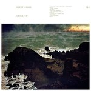
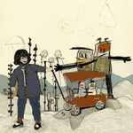
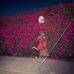
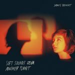
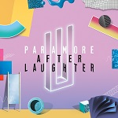

The Best Albums of 2017: Bubbling Under
There's always a select, praise-worthy few that just don't quite make it to our official year-end list and we feel should get the acknowledgment they deserve. You can't go wrong with giving any of these a chance.
...
Fleet Foxes
Crack-Up
(Nonesuch Records Inc.)
Crack-Up unfolds with a rich and impenetrable vocabulary. It may be Fleet Foxes’ complete maturation as songwriters, where they fully venture into progressive territory with laboriously-layered baroque instrumentation. It’s a deceptively bold move from a band who continues to harbor their studious minds with engaging and complicated art. Juan Edgardo Rodríguez
EMA
Exile in the Outer Ring
(City Slang)
Written before the end of last year’s presidential primaries, Exile In The Outer Ring feels eerily prophetic in hindsight. A darkly surreal story about political alienation, it can sometimes be difficult and disorienting to grasp, but then again, so are the times we are currently living in. Jeremy Monroe
Girlpool
Powerplant
(Anti-)
Adding a drum kit wouldn’t be a big deal for most groups, but for Girlpool, the once-timid twee band managed to become an indie rock powerhouse. Though their cooing harmonies and twangy guitars remain, songs like It Gets More Blue and Kiss and Burn are as catchy as they are anthemic. Peter Quinton
Feist
Pleasure
(Polydor/Interscope)
Feist's fifth album may have less commercial appeal than previous efforts, but the depths of feeling found within expand her range. The stripped sound is a hotbed for raw emotions, with tracks like Lost Dreams and I'm Not Running Away offering a fresh take on the blues. Angel Aguilar
Juana Molina
Halo
(Crammed Discs)
Being the daughter of a tango musician, Juana Molina understands the vitality of cadence. That being said, everything about her seventh LP branches from her quirky, scuttling rhythms that morph from pulsing knots of sound to macabre waves of disposition. Once entangled in it, her palette is one that is impossible to pull yourself away from. Carl Purvis
Sheer Mag
Need to Feel Your Love
(Wilsun RC)
It makes sense that the protest-heavy debut LP from Philadelphia’s Sheer Mag is so heavily influenced by classic rock, a genre that sustained a generation of anti-establishment fervor. Need to Feel Your Love opens with Meet Me in the Street, a riotous call to arms showcasing lead singer Tina Halladay’s vocals like an unveiling of some Janis Joplin/Axl Rose chimera. The rest of the record follows suit with a blend of influences, evoking Creedence, Zeppelin, AC/DC and even a little ABBA-esque disco. An album well worth your attention. Gabbie Nirenburg
Japanese Breakfast
Soft Sounds From Another Planet
(Dead Oceans)
This loose release by Michelle Zauner expands its sound in wild ways. Machinist is a highlight, a left turn of warped synth pop. Boyish sours the sappy strings of 1950s love songs. And in the gentle piano of Till Death and folk of This House, there's a message of survival. Joe Marvilli
Waxahatchee
Out in the Storm
(Merge)
On Out in the Storm, Katie Crutchfield once again proves she’s a natural at heartfelt, confident indie rock. Though it has a cleaner, more polished sheen than her past albums, the album shines with impeccable songcraft, from skyward ballad Sparks Fly to the rollicking gut punch of Silver. Peter Quinton
Paramore
After Laughter
(Atlantic)
After Laughter is, simply put, one of the most vibrant pop albums of the year. It continues Paramore’s trend of moving away from their grunge-rock roots, opting for a more synth-led, polished sound. Which, thanks to some catchy riffs and exceptional songwriting, most definitely works. Craig Stevens
Benjamin Clementine
I Tell a Fly
(Universal Music France)
The English pianist/singer-songwriter's sophomore effort can only be described as seductively eclectic and elusive progressive pop. I Tell A Fly ingeniously unites the showmanship of a chameleonic persona like David Bowie with the unbridled passion of Nina Simone under a neoclassicist aesthetic inspired by the likes of Debussy, Ravel and Weill. On the single God Save The Jungle, Clementine stirringly tributes them all while delivering a poignant, political commentary on emigration and alienation. Grant Phipps
. . .
Our full Top 50 Albums of 2017 list will be published later in the week.
13 December, 2017 - 04:23 — No Ripcord Staff